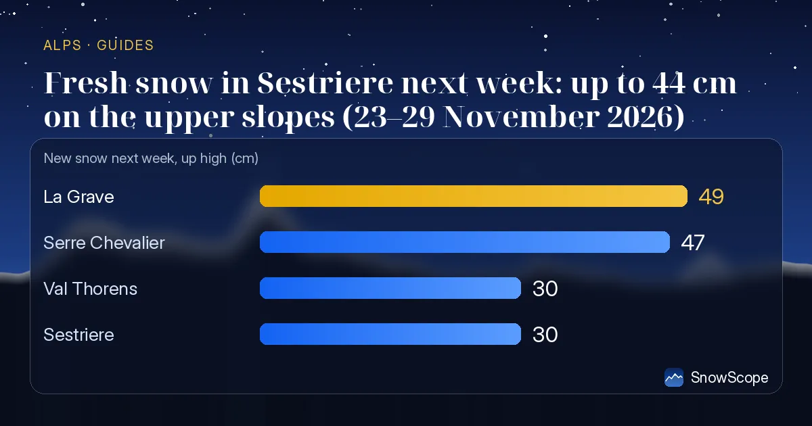

Fresh snow in Sestriere next week: up to 44 cm on the upper slopes (23–29 November 2026)
Next week's snow numbers for Sestriere: 30 cm at the top, 27 cm at mid-mountain, 25 cm at the base, all as the middle of a range for 23–29 November. The top's range runs from 15 to 44 cm, which says as much as the middle value does.
See the live snow forecast for Sestriere in the SnowScope appSnow depth, powder alerts and the 3D map, free.
What 17–20 November leaves behind
The first instalment comes this week: 34 cm on the upper slopes of Sestriere from 17 to 20 November, 10 cm lower down. Next week adds a second layer on top.

Next week, height by height
At the top (around 2700 m) the week totals 30 cm, 15–44 cm across our range. Mid-mountain around 2200 m gets 27 cm (14–41 cm), and the base around 1700 m 25 cm (13–38 cm).
Most of the total arrives on Tuesday 24 (3 cm, up to 3), Wednesday 25 (10 cm, up to 15), Thursday 26 (10 cm, up to 15) and Sunday 29 (6 cm, up to 11), counted at the top as the middle of our forecast and the high case.
Best day, best slopes
Wednesday 25 November is the snowiest day up top: 10 cm in the middle of our forecast and up to 15 cm in the high case. The morning after a snowy day is usually the one to ski, once lifts and patrols have caught up.
Go high: depth is safest on the Monte Motta, Sises and Banchetta, and the best skiing should be on the north-facing Banchetta runs. Treat Sauze d'Oulx and Cesana, lower in the Via Lattea as the weak point.
Snow or rain at the bottom?
The base gets nearly as much as the top (25 against 30 cm), which means the snow line stays below the lowest lifts for most of the week. Snow down to the village is the likely picture.
Sestriere sits on a col, so it can catch snow from storms coming up from Italy and over from France.
Confidence, in plain words
Medium. Our range at the top runs from 15 to 44 cm, so the storm is likely but its size is not settled. Take the middle value as a guide, not a promise.
Book flexibly if you can: the picture for Sestriere will be much sharper by the weekend.
Sestriere against its neighbours
Same week, same measure (top of each resort): Serre Chevalier (28 km away) 47 cm; Val Thorens (44 km away) 30 cm; La Grave (50 km away) 49 cm. Sestriere itself: 30 cm.
So La Grave is the better bet for fresh snow next week, if you are free to choose.
Tips for skiers
- Off the groomed runs, new snow means new avalanche risk: the regional avalanche bulletin (bollettino valanghe) is the reference.
- Early season: confirm which lifts are open with Sestriere itself before you travel.
- Watch the forecast midweek: the top's range is 15–44 cm.
More maps (external sites)
About these numbers
Snow numbers: our two-week snow forecast issued on 16 November 2026, read at three heights of the resort (top, mid-mountain, base). Each total is the middle of a range, with a low and a high case. These are estimates for the slopes, not resort measurements, and forecasts move from day to day: check the live map before you go.
Cite this report
For research, teaching or the press: the numbers and charts are free to reuse under CC BY 4.0 with this citation.
SnowScope (2026), Fresh snow in Sestriere next week: up to 44 cm on the upper slopes (23–29 November 2026), https://snowscope.app/blog/en/2026/11/sestriere-powder-forecast-next-week-23-29-november-2026.html, accessed 2026-11-16
SnowScope (Atlas Labs). (2026, November 16). Fresh snow in Sestriere next week: up to 44 cm on the upper slopes (23–29 November 2026). SnowScope snow reports. https://snowscope.app/blog/en/2026/11/sestriere-powder-forecast-next-week-23-29-november-2026.html
BibTeX
@misc{snowscope2026sestrierepowderforecastn,
author = {{SnowScope (Atlas Labs)}},
title = {Fresh snow in Sestriere next week: up to 44 cm on the upper slopes (23–29 November 2026)},
year = {2026},
month = nov,
howpublished = {\url{https://snowscope.app/blog/en/2026/11/sestriere-powder-forecast-next-week-23-29-november-2026.html}},
note = {Published 2026-11-16 11:54 UTC; accessed 2026-11-16}
}· CC BY 4.0 · Methods, data and tools →
Sestriere: snow and temperature by height, this winter vs last (tools) →
Follow Sestriere
Free: a message when fresh snow is coming, and the forecast every morning.
More snow reports

New snow forecast for the Alps through early December. Saint François Longchamp leads with 228 cm expected over 14 days, starting with 35 cm on Thursday.

Snowfall in Val Thorens, 13 November 2026: 27 cm fell at the top (3175 m) and 17 cm at 2498 m over seven days; snow depth is 50 cm and 8 cm. Next seven days: 86 cm at the top, 73 cm at 2498 m, snow line well below the village. Usual snowfall season from 46 winters.

Tignes snow conditions on 13 November 2026: 42 cm at the top (3447 m), 12 cm at 2503 m, a bare valley at 1559 m, and 99 cm forecast at the top over seven days, with rain below about 1700 m. How it compares with 46 past winters.